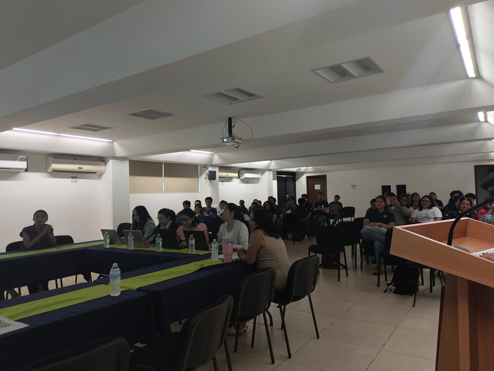
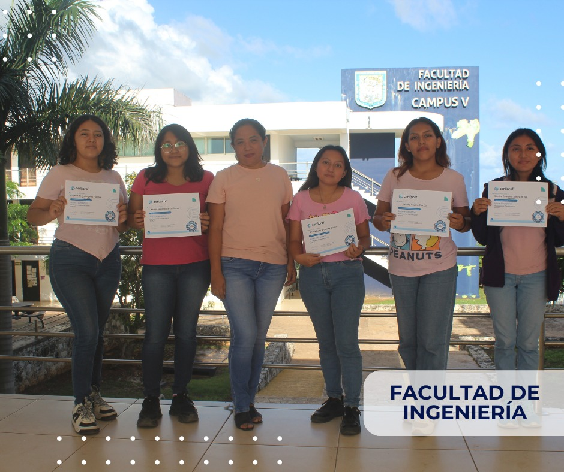
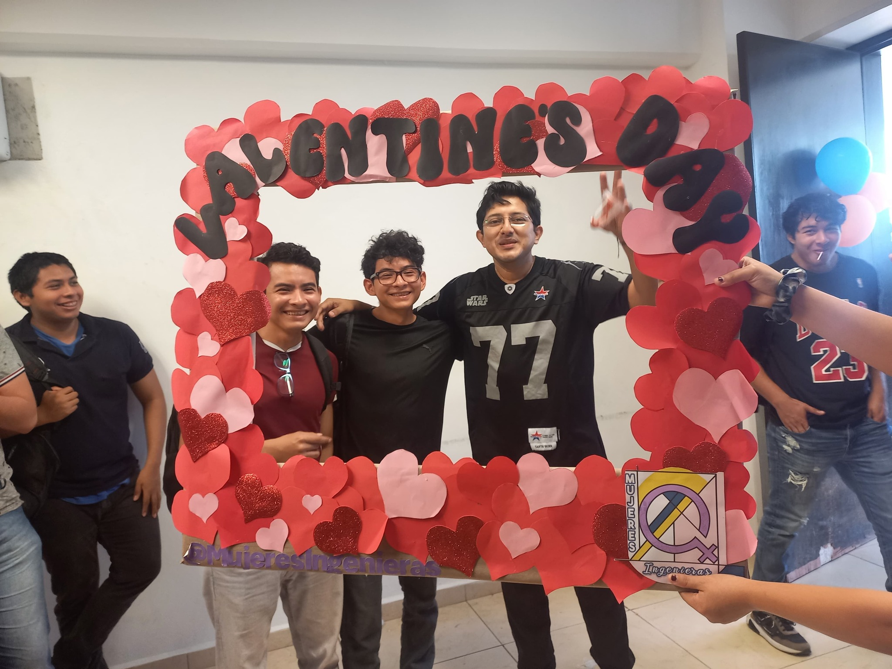
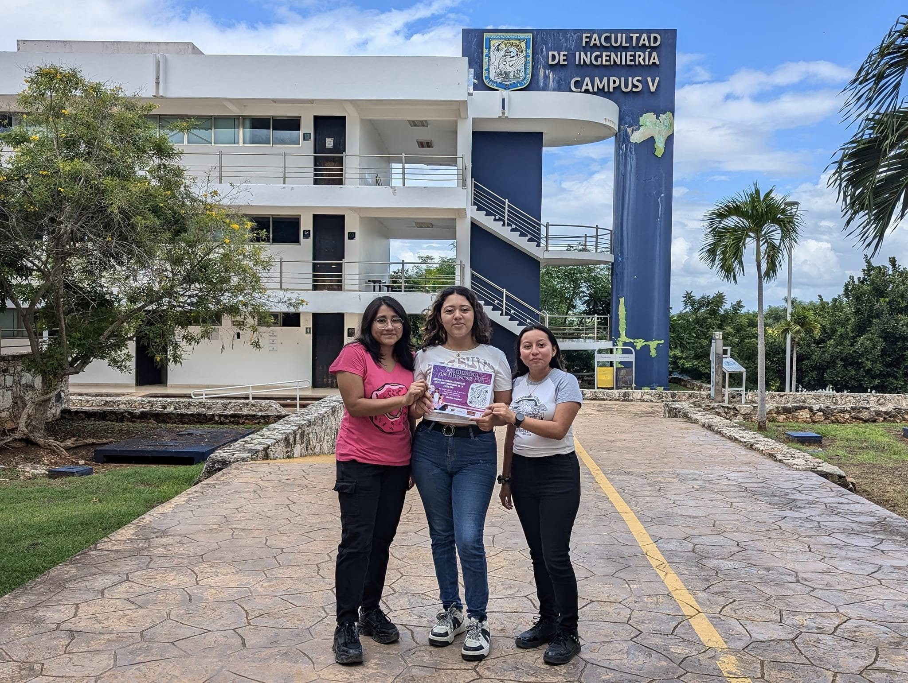

Actividades Realizadas






Estudios analizan la desigualdad de género en STEM. Según la UNESCO, solo el 35% de quienes cursan estudios superiores en esta área son mujeres.
El objetivo es crear una comunidad que empodere a niñas y jóvenes en tecnología, brindando apoyo, motivación y desarrollo de habilidades para que alcancen sus metas y fomenten la diversidad en STEM.
La visión es empoderar a mujeres en tecnología e ingeniería, incentivando su estudio y creando una comunidad inclusiva que fomente el aprendizaje, la innovación y el desarrollo de habilidades en STEM.




"Ser parte de la comunidad de Mujeres Ingenieras me ha permitido conectar con mujeres inspiradoras y aprender constantemente."
- Sheila Camas
""Liderar la comunidad de Mujeres Ingenieras ha sido una experiencia increíble. Ver cómo nuestras integrantes crecen y se empoderan en su camino profesional me llena de orgullo. Juntas, estamos construyendo un futuro más inclusivo en la ingeniería."
- Dr. Luz Maria Hernandez Cruz
"Formar parte de la comunidad de Mujeres Ingenieras ha sido una de las decisiones más importantes de mi vida universitaria. Aquí encontré un espacio donde no solo se valora el conocimiento, sino también el apoyo, la sororidad y el crecimiento personal."
- Eugenia Fuentes
Estamos a su disposición para cualquier consulta o información adicional. Puede contactarnos a través de los siguientes medios:
EmaiL: comunidadfdi@gmail.com
Teléfono: 996 113 94 43
Dirección: Avenida Ex Hacienda Kalá, San Francisco de Campeche Campeche CP. 24084